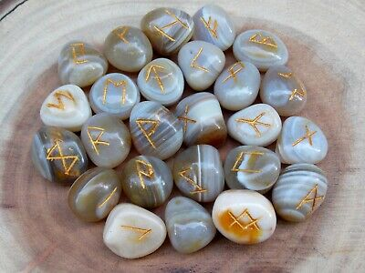

<mat-tab-group>
  <mat-tab label="15/05">
    <ng-template matTabContent >

       <!-- <mat-vertical-stepper [linear]="true" #stepper>
          <mat-step label="Ore 11:30" state="phone">

            <mat-card class="example-card" fxLayout="column">
              <mat-card-header>
                <div mat-card-avatar class="example-header-image"></div>
                <mat-card-title>Corso di lettura delle rune</mat-card-title>
                <mat-card-subtitle>Organizzato da: </mat-card-subtitle>
              </mat-card-header>
              
              <mat-card-content>
                <p>
                  L'alfabeto runico,
                  detto "fuþark" (dove il segno þ corrisponde al suono th dell'inglese think),
                  dalla sequenza dei primi 6 segni che lo compongono
                  (*Fehu, *Uruz, *Þurisaz, *Ansuz, *Raido, *Kaunan),
                  era l'alfabeto segnico usato dalle antiche popolazioni germaniche
                  (come ad esempio Norreni, Angli, Juti e Goti).
                </p>
              </mat-card-content>
            </mat-card>


          </mat-step>
          <mat-step label="Ore 15:00" state="chat">
            <p>Socialize with each other.</p>
          </mat-step>
          <mat-step label="Ore 17:00">
            <p>You're welcome.</p>
          </mat-step>
          &lt;!&ndash; Icon overrides. &ndash;&gt;
          <ng-template matStepperIcon="phone">
            <mat-icon>book</mat-icon>
          </ng-template>
          <ng-template matStepperIcon="chat">
            <mat-icon>forum</mat-icon>
          </ng-template>
        </mat-vertical-stepper>-->


    </ng-template>
  </mat-tab>
  <mat-tab label="16/05">
    <ng-template matTabContent>
      Sabato
    </ng-template>
  </mat-tab>
  <mat-tab label="17/05">
    <ng-template matTabContent>
      Domenica
    </ng-template>
  </mat-tab>
</mat-tab-group>


